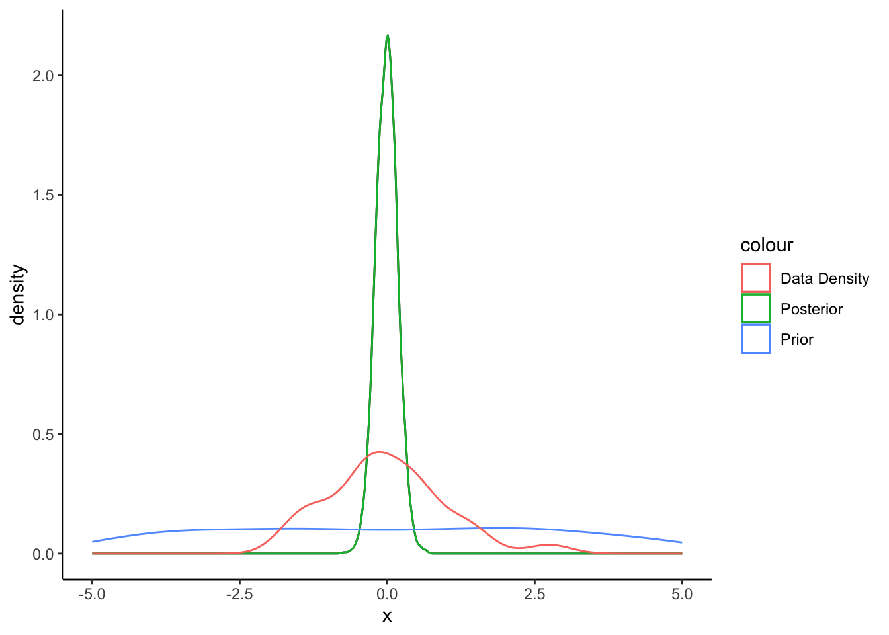
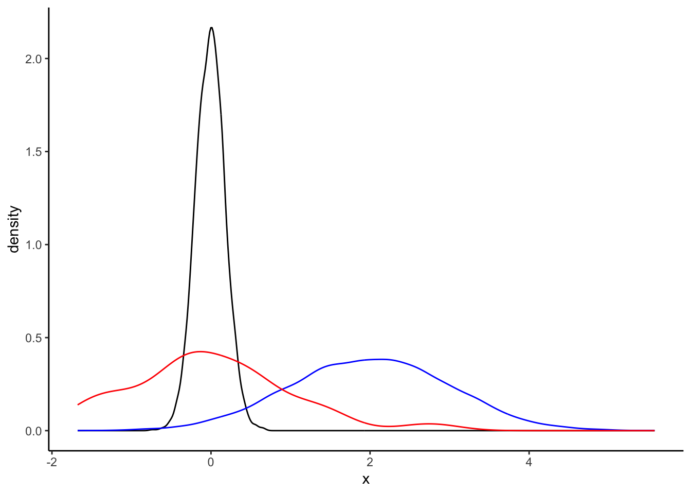
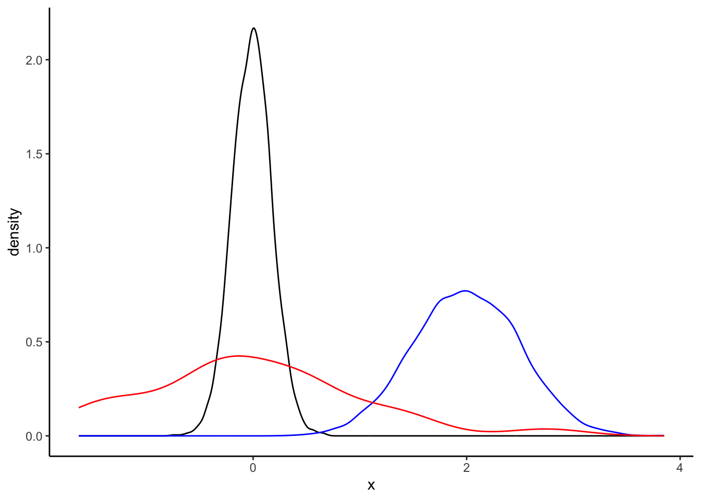
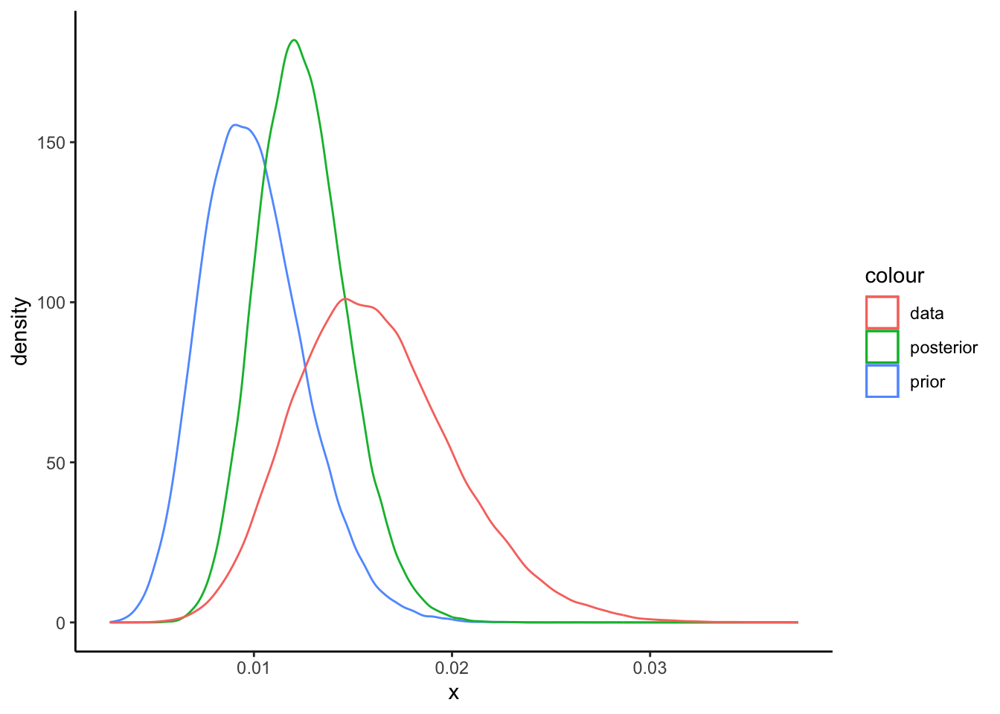
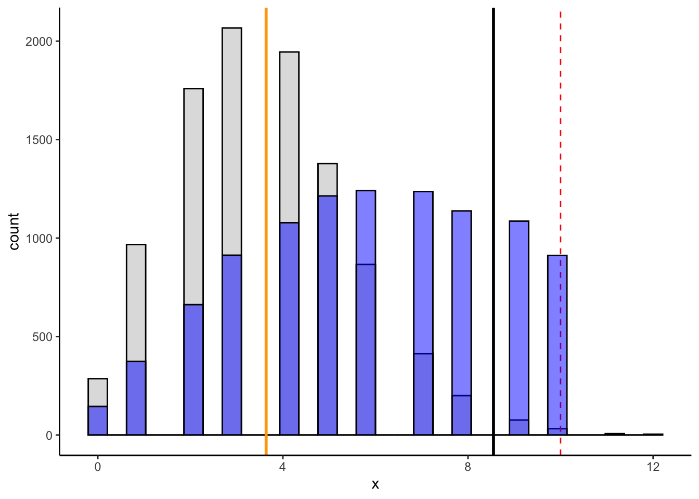

Gibbs Sampling Examples
Introduction
Estimating Mean and Variance of Normally Distributed Random Variables
Why use gibbs sampler
Non-Informative priors for unknown parameters
Estimates using classical Frequentist estimates:
Estimate for true \(\mu = 0\) given by \(\bar{X}\) = -0.0078
For future comparison, for a sample size of size \(n = 30\), \(Var(\bar{X})\) = 0.0327, yielding a standard error equal to 0.1809
Estimate for true variance \(\sigma^2 = 1\) given by \(\bar{S^2}\) = 0.982
Parameters for Bayesian inference:
mean of \(\mu\) is 0
variance of \(\mu\) is 10,000
\(\alpha\) = \(\beta\) = 0.001 for \(\sigma^2\)
Estimates using Bayesian inference:
Estimate for true \(\mu = 0\) given by mean of estimated posterior distribution using 10,000 draws: -0.0081
Standard error of the mean is the standard deviation of the posterior distribution: 0.1861
Estimate for true variance \(\sigma^2 = 1\) given by the mean of the posterior distribution for \(\sigma^2\), which is 1.05
Slightly more informative priors
Parameters for Bayesian inference:
mean of \(\mu\) is 2
variance of \(\mu\) is 1
\(\alpha\) = 200, \(\beta\) = 100 for \(\sigma^2\)
Estimates using Bayesian inference:
Estimate for true \(\mu = 0\) given by mean of estimated posterior distribution using 10,000 draws: -0.0081
Standard error of the mean is the standard deviation of the posterior distribution: 0.1861
Estimate for true variance \(\sigma^2 = 1\) given by the mean of the posterior distribution for \(\sigma^2\), which is 1.05

Very more informative priors
Parameters for Bayesian inference:
mean of \(\mu\) is 2
variance of \(\mu\) is 0.25
\(\alpha\) = 500, \(\beta\) = 1500 for \(\sigma^2\)
Estimates using Bayesian inference:
Estimate for true \(\mu = 0\) given by mean of estimated posterior distribution using 10,000 draws: -0.0081
Standard error of the mean is the standard deviation of the posterior distribution: 0.1861
Estimate for true variance \(\sigma^2 = 1\) given by the mean of the posterior distribution for \(\sigma^2\), which is 1.05

Estimating Age-Adjusted County-Level Mortality Rates in PA
Model
Challenges
Use of Gibbs
Results
| County | Age Group | Deaths | Population | Crude Rate |
|---|---|---|---|---|
| Adams County, PA | 65-74 years | NA | 11402 | NA |
| Adams County, PA | 75-84 years | 15 | 5763 | 260.3 |
| Adams County, PA | 85+ years | 27 | 2694 | 1002.2 |
| County | Deaths | Population | Crude Rate | Est. Rate |
|---|---|---|---|---|
| Adams County, PA | NA | 19859 | NA | 255.3610 |
| Allegheny County, PA | 579 | 220511 | 248.7788 | 249.4051 |
| Armstrong County, PA | NA | 14150 | NA | 253.3177 |
| Beaver County, PA | 104 | 34266 | 295.8107 | 287.0217 |
| Bedford County, PA | NA | 10287 | NA | 275.0804 |
| Berks County, PA | 254 | 68350 | 370.8231 | 355.5988 |
Visualize rates for One Conty
| County | Age Group | Deaths | Population | Prior Rate | Data-Estimate | Posterior Rate |
|---|---|---|---|---|---|---|
| Susquehanna County, PA | 85+ years | 16 | 991 | 0.01 | 0.02 | 0.01 |

How did we handle missing values
